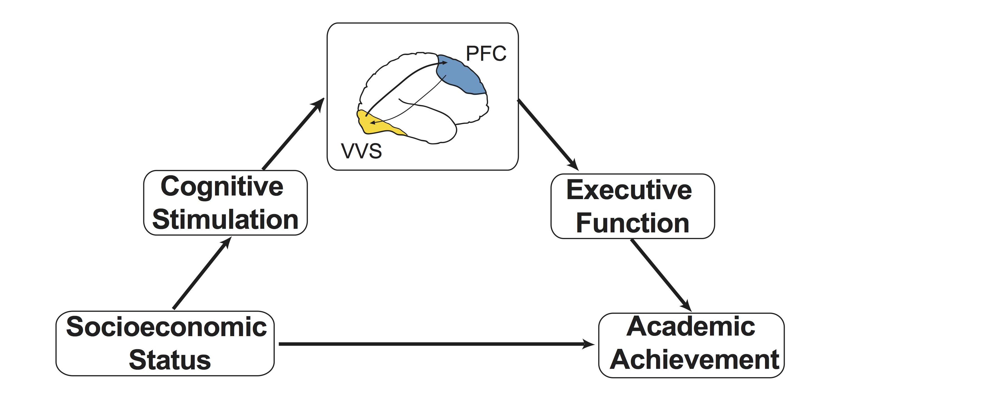

Research
Mechanisms of the Income-Achievement Gap
Children from low-socioeconomic status (SES) backgrounds tend to exhibit lower academic performance than children from more privileged backgrounds. This is known as the income-achievement gap and early disparities in performance can contribute to furthering the unfair long-term advantage for children who grow up in high-SES households. I have developed a line of research that focuses on trying to uncover the environmental, neural, and cognitive mechanisms that explain this gap with the hope of informing interventions that may mitigate these disparities. Through a several recent projects, I have demonstrated that cognitive stimulation—including access to developmentally appropriate learning materials, variety of experiences, caregiver involvement in learning, and a complex linguistic environment—is an important mechanism explaining the achievement gap (Rosen, et al., 2019, Child Development; Rosen et al., 2018, NeuroImage; Rosen et al., 2019, Developmental Cognitive Neuroscience).
I recently received a K99 Pathway to Independence Award from the National Institute of Child Health and Human Development to further explore specific aspects of the environment and neurodevelopment that contribute to the income-achievement gap. In particular, this project focuses on testing my recently proposed conceptual model Rosen, Amso, & McLaughlin, 2019 that cognitive stimulation in the context of caregiver interactions may influence development of lower-level sensory processing regions including the ventral visual stream (VVS) and that this may in-turn influence development of the prefrontal cortex and associated higher-order cognitive abilities. I am currently conducting a study to test these hypotheses in a sample of kindergarteners.  (Image courtesy of Nessa Bryce).
Fostering Adaptive Socio-Emotional Development
Why is it that some children who experience adversity go on to develop psychopathology and socioemotional difficulties while others do not? Another line of my research has focused on understanding factors that promote adaptive socio-emotional development in typically developing children as well as among children who have experienced adversity. Adolescents demonstrate of heightened sensitivity to social and emotional information compared with adults and children and are more likely to take risks and succumb to peer pressure However, some of these sensitivities confer benefits to adolescents. I have demonstrated in typically developing children that heightened neural response to changes in emotional facial expressions of others among adolescence is associated with lower levels of social anxiety and social problems Rosen, et al., 2018, Development Science. These findings add to the growing literature that suggests that adolescent-specific sensitivities to social and affective information are not only associated with vulnerability to social influence and risky behavior, but may confer behavioral advantages that produce adaptive social behavior. . I am also interested in different factors that can promote resilience and buffer against stressful life events. I have been involved in a number of studies that demonstrate that while children who have been exposed to violence are at increased risk for depression, children who are more sensitive to rewards (show greater behavioral and neural response) do not show this relationship between maltreatment and depression (Dennison, et al., 2016, Journal of Abnormal Psychology; Dennison, Rosen, et al., 2019, Child Development). Additionally, I have investigated factors that promote resilience in the wake of the stressful life events that have accompanied the COVID-19 global pandemic. Using two longitudinal cohorts and controlling for previous psychopathology, I found that physical exercise, time in nature, less screen time, less news consumption, and sleep quality and quantity all play an important role in buffering against COVID-19-related stress, especially among younger children (Rosen, Rodman, Kasparek, Mayes, Freeman, Meltzoff, & McLaughlin, Under Review). Together this work and future work has potential to inform interventions designed to promote protective factors among children who have experienced adversity. (FIGURE FROM COVID PAPER)
Neurodevelopmental Mechanisms of Attention and Memory
What are the neurodevelopmental mechanisms that explain age-related improvements in cognitive function? Many studies have focused on the role of development of brain regions like the prefrontal cortex and hippocampus in developing higher order cognitive abilities. My work has additionally demonstrated the important role that early sensory development plays in scaffolding cognitive development. Specifically, my work has demonstrated that category- preferring visual processing regions in the ventral visual stream (VVS) play an important role in supporting the development of working memory and long-term associative memory across childhood and adolescence (Rosen et al., 2018; Journal of Cognitive Neuroscience). In both working memory and paired associate learning tasks, I have shown that activation in regions of the VVS increase linearly with age and serve as mechanism explaining age-related improvements in performance (Figure from PAL paper). When a child arrives at school for the first time, they must actively look for cues to guide their attention to the most relevant information. Initially, the child may experience this novel sensory and social information as overwhelming and distressing, limiting their ability to focus on one task. As the school year progresses, however, the child develops a long-term memory (LTM) of the environment and can use that memory to guide their attention more efficiently, freeing attentional resources for other tasks. Despite the importance of memory- guided attention, scant research has examined how this process develops across childhood and adolescence. Building on my graduate work focused on memory-guided attention in adults, I recently investigated the neural mechanisms that support cued and memory-guided attention in young children. In that study, I found that the pattern of neural activation during the cued attention task was remarkably similar to that of adults, while the pattern of activation during the memory-guided attention task differed from what has been found in adults. These findings suggest that the neural systems that support memory-guided attention may be more protracted in their development than those that support cued attention. I received NRSA fellowship
Attention, Memory, and Visual Processing in Adults
Human attentional capacity is severely limited, yet performance in the real world far exceeds powerful super computers. How can we reconcile this superior performance with our limited attentional capacity? Visual performance is enhanced in familiar environments because long-term memory can be used to guide visual attention to the most relevant information in the environment. Humans repeatedly encounter familiar environments, and memory-guided attention allows for more efficient use of cognitive resources. My graduate research focused on understanding this cognitive process, the neural substrates that support it, as well as other mechanisms that allow for more efficient interaction with the environment. (Rosen et al., 2016, Cerebral Cortex; Rosen et al., 2015, Journal of Cognitive Neuroscience]; Rosen et al., 2018, Cerebral Cortex). (Memory-Guided Attention.png).